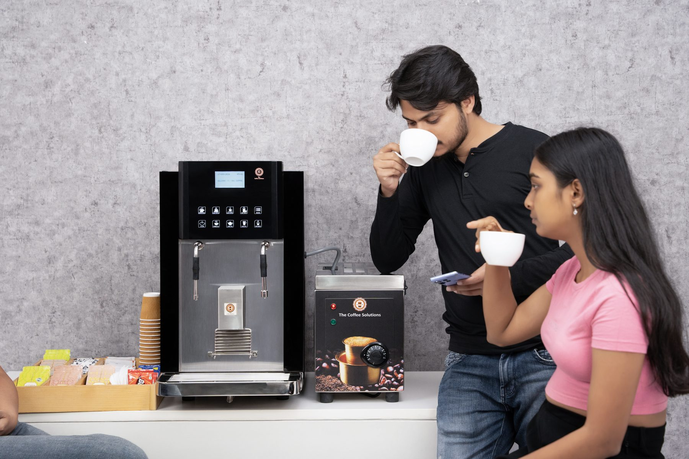
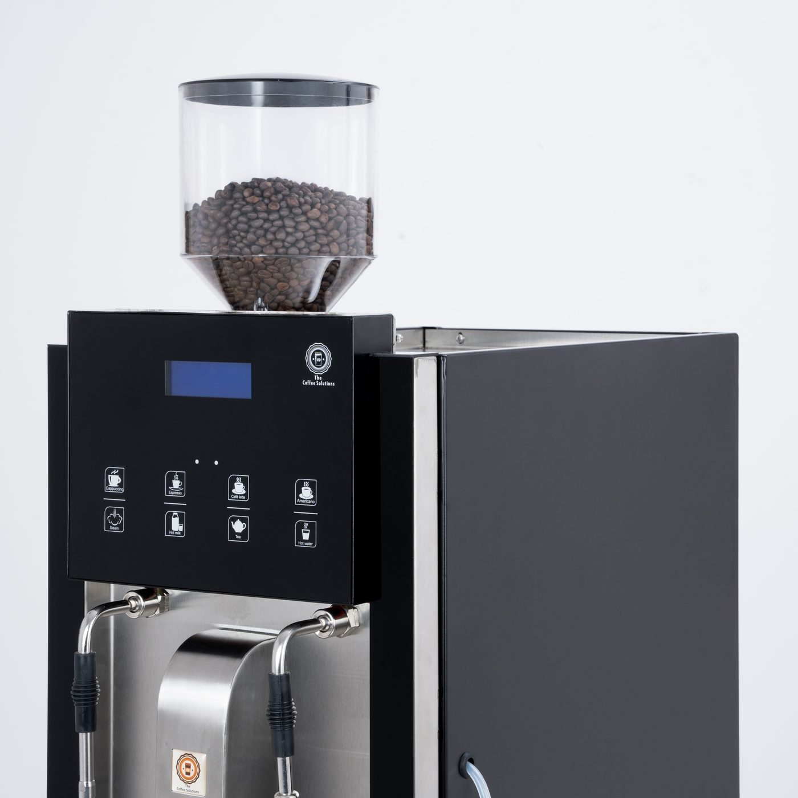
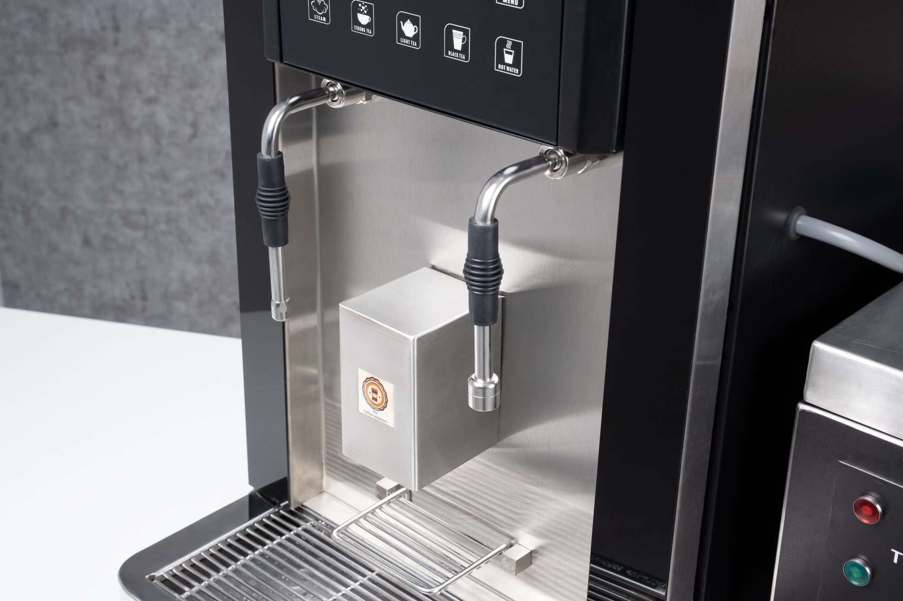
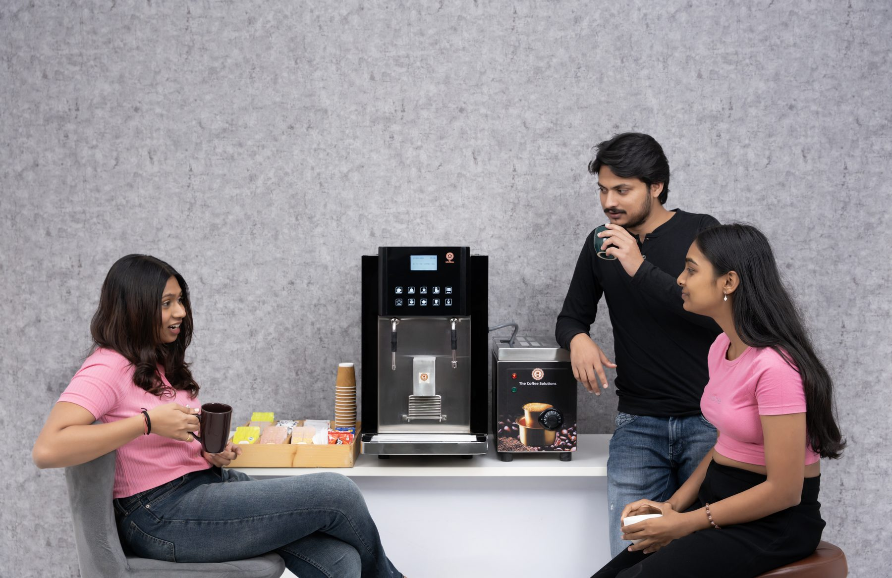
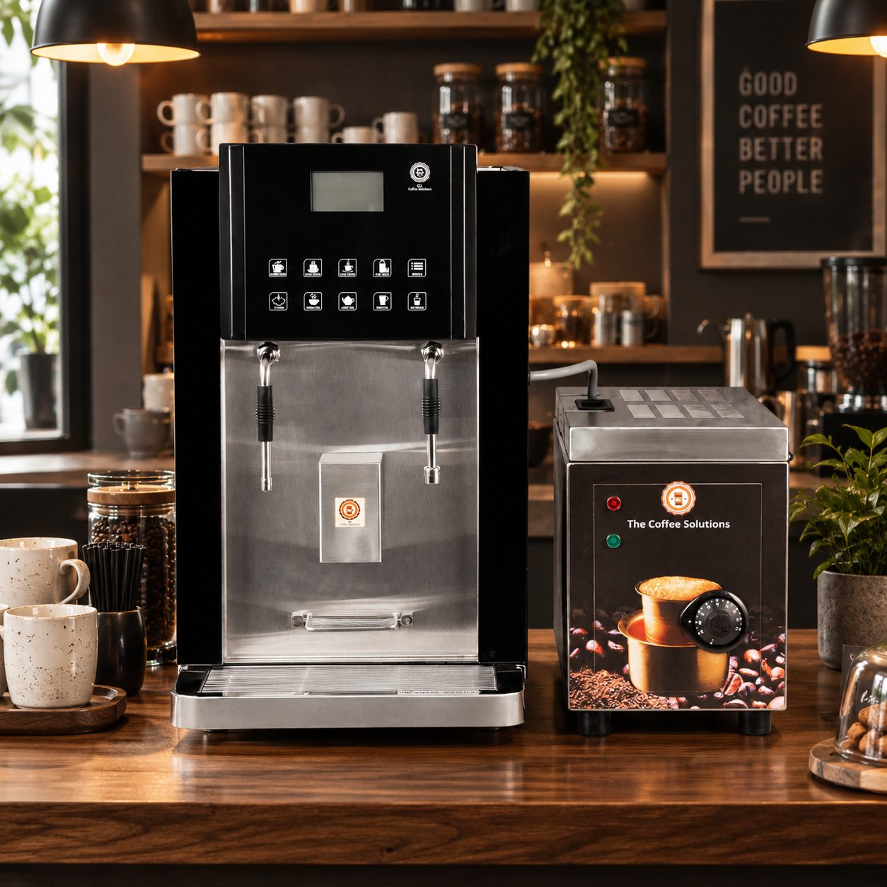
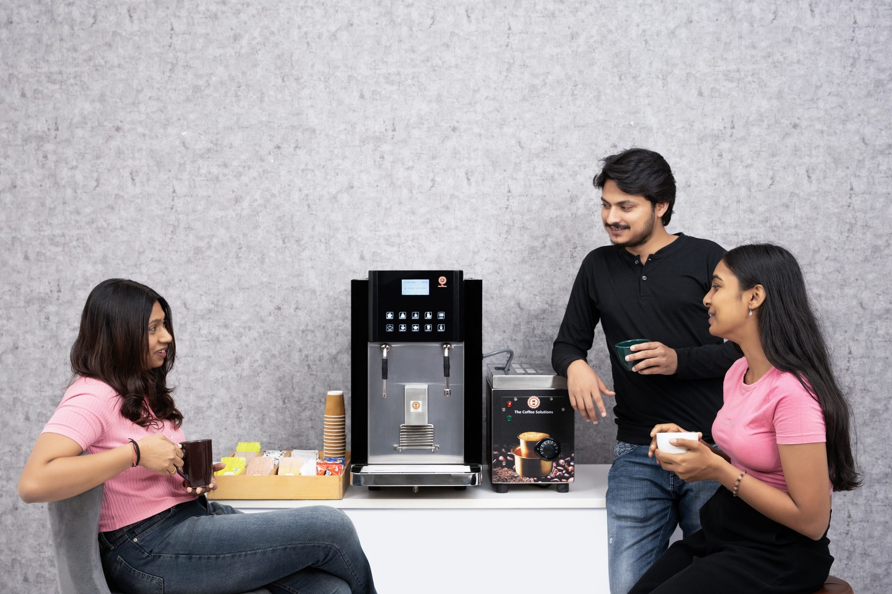
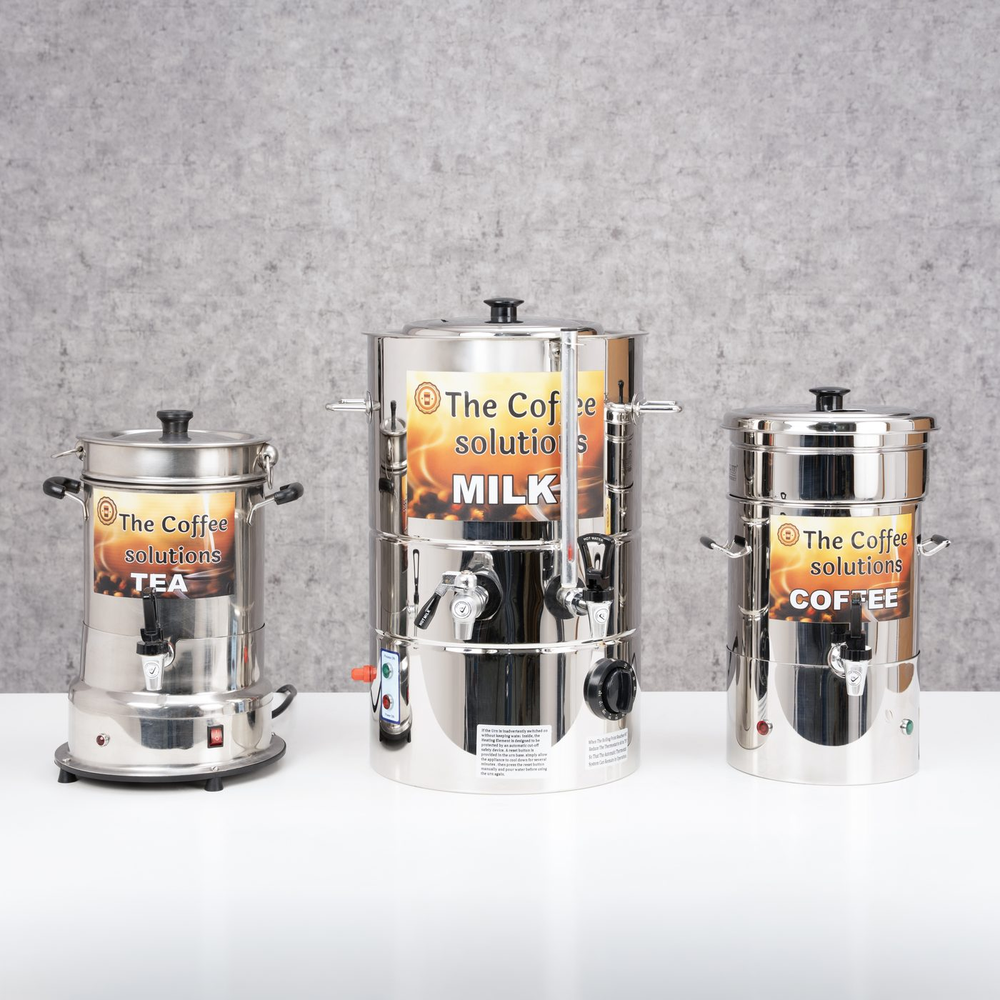

01 / HOME
A better morning.
Bring café-style coffee into the everyday without turning the kitchen into a workstation.
ROYALCFE / BEAN TO CUP
Thoughtfully designed machines for better coffee, better spaces and the everyday rituals in between.
Explore the machine ↓THE ROYALCFE APPROACH
We believe a coffee machine should do more than make a cup. It should look right in the room, feel simple to use and make the coffee worth coming back for.
That is the thinking behind RoyalCfe.
THE MACHINE
A considered bean-to-cup system, designed around the things that matter: the cup, the workflow and the space around it.

DESIGN
The black body, clean front and precise controls are intentionally restrained. It is a machine that can hold attention without taking over the room.

DETAILS THAT MATTER
Start with whole beans and let the machine take care of the journey.
A straightforward interface keeps the experience familiar from the first cup.
A compact, considered form that works naturally at home, at work or in hospitality.
THE RITUAL
Espresso before the day starts. A coffee between meetings. Something warm when the conversation runs late. The best machines become part of the rhythm of a place.
FOR EVERY SPACE
From a quiet kitchen counter to a busy hospitality space, the right coffee setup should fit the way people actually use it.

Bring café-style coffee into the everyday without turning the kitchen into a workstation.

Good coffee gives a shared space another reason to pause, meet and reset.

Reliable coffee equipment that belongs behind a well-designed counter.

06 / COFFEE & PEOPLE
What matters is what happens around it — the conversations, the pauses, the familiar cup and the people who come back for another.
FROM THE ROYALCFE WORLD


THE MACHINE THE CUP
THE CUPLET'S TALK COFFEE
Tell us about the machine, the space and the kind of coffee experience you are looking for.
Start a conversation ↗